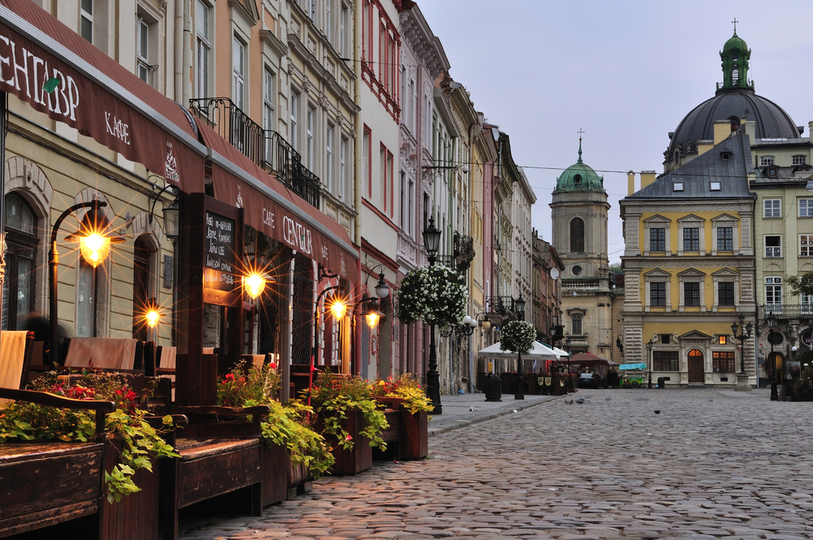

Повернення до Польщі. Львів у міжвоєнний період - 1919 рік
Після Першої світової війни, після поразки у ній Австро-
Угорської імперії Львів волею європейських
держав-переможців
знову потрапив під панування Польщі.
Листопадовий (1918 року) виступ українців за незалежність,
утворення Західноукраїнської Народної
Республіки,
об’єднання
з Великою Україною, хоча у підсумку таки закінчились
поразкою, все ж заклали підвалини
української
незалежності й
соборності. Панування польського авторитарного режиму у
Львові у 1919-1939 роках
посилювало
спротив українців,
консолідувало їх у боротьбі за свої права.
На зміну «золотому вікові» австрійської сецесії початку XX
століття у місцевому будівництві прийшов
прагматичний і
строгий конструктивізм. Територіально Львів значно розширився
за рахунок ряду
приміських
районів. Якщо населення Львова у
1910 році складало 210 тисяч, то напередодні Другої світової
війни
вже
понад 300 тисяч.
Під владою радянського
тоталітаризму - 1939 рік
У вересні 1939 року внаслідок змови Сталіна з гітлерівською
Німеччиною Львів потрапив до складу
Радянської
імперії.
українізація освіти та культури зводилася нанівець масовими і
небаченими в історії тоталітарними репресіями проти західних
українців. Десятки тисяч галичан було знищено, сотні тисяч
вивезли у концтабори та вигнання у Сибір. Опір Української
повстанської армії радянському режимові тривав до другої
половини 50-х років. У 60-і та 70-і роки гучними були процеси
у Львові над дисидентами В’ячеславом Чорноволом, Богданом
Горинем, Іваном Гелем, Іриною та Ігорем Калинцями. Всі вони
спричинилися до подальшого здобуття Україною незалежності.
Сучасний Львів - 1991
Львів, який є незаперечною столицею української культури,
духовності і національної ідентичності, завжди
відігравав чільну
роль у розвитку процесів демократії та здобуття української
незалежності.
Усі державотворчі процеси становлення і утвердження
української незалежності ініціювалися зі Львова. Тут
відбувалися
перші масові акції на підтримку незалежності, учасників яких
переслідували і били
спецзагони
міліції.
17 вересня 1989 року у Львові відбулася найбільша на той час
стотисячна демонстрація за відродження
української
незалежності і Греко-Католицької Церкви. Живий ланцюг
соборності між Львовом і Києвом 21
січня 1990 року, коли
одночасно взялися за руки мільйони українців, став віхою на
шляху відновлення
української держави. 3 квітня 1990 року над
львівською Ратушею замайорів синьо-жовтий державний
стяг.
На
святкування ухвалення Акта про державну незалежність
України 24 серпня 1991 року наступного дня на
вулиці
міста
вийшли сотні тисяч львів'ян.
У 1999 році Львів виступив своєрідною столицею Центрально-
Східної Європи. Він став єдиним містом в
історії
України, яке
приймало одночасно дев’ятьох керівників держав під час саміту
глав держав Східної та
Центральної Європи.
Львів завжди був і є детонатором націотворчих і демократичних
процесів в українській державі. Наше місто
стало головним
оплотом Помаранчевої революції листопада-грудня 2004 року,
коли про Україну заговорив
увесь світ. 70% усіх львів’ян брали
участь у акціях відстоювання демократії у Львові і щотретій
львів’янин побував на Майдані Незалежності у Києві. Восени
2006 року Львів урочисто святкував
своє
750-річчя.